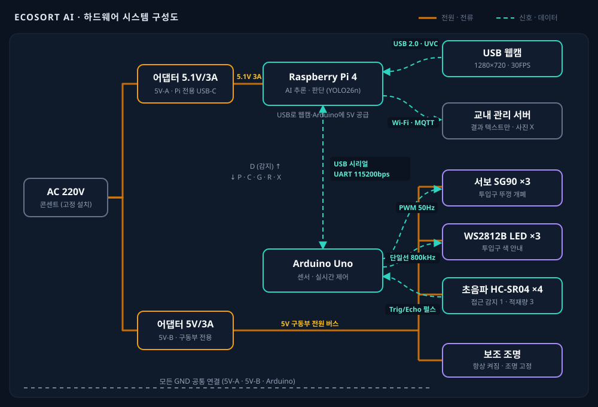
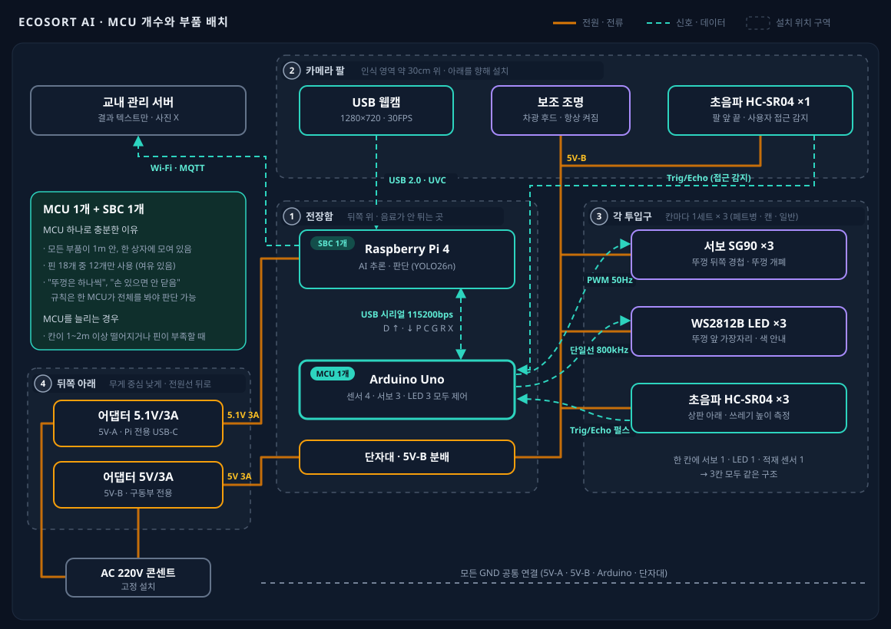
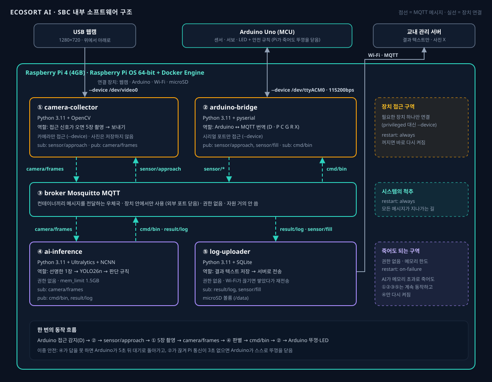

기준을 모름
라벨 붙은 페트병, 종이컵, 은박 포장재처럼 헷갈리는 쓰레기가 많아 잘못된 칸에 투입합니다.
사용자가 쓰레기 종류와 배출 기준을 직접 판단해야 하기 때문입니다. 기준을 모르거나 급할 때는 아무 칸에나 버리게 되고, 그 부담은 관리자와 환경으로 이어집니다.
라벨 붙은 페트병, 종이컵, 은박 포장재처럼 헷갈리는 쓰레기가 많아 잘못된 칸에 투입합니다.
쉬는 시간처럼 바쁜 순간에는 고민할 여유가 없어 "일단 일반쓰레기"로 버리는 습관이 생깁니다.
혼입된 재활용품을 다시 골라내야 해서 선별 인력과 시간이 계속 늘어납니다.
잘못 섞인 페트병과 캔은 재활용되지 못하고 소각·매립되어 자원이 낭비됩니다.
문제 가설쓰레기를 버리는 그 순간에 무엇을 어디에 버려야 하는지 즉시 알려주면, 사용자는 별도의 학습 없이도 올바르게 분리배출할 것이다.
물체 감지부터 투입까지, 사용자는 아무 버튼도 누르지 않습니다.
근접 센서가 카메라 앞의 쓰레기를 감지합니다.
USB 카메라가 쓰레기 이미지를 촬영합니다.
경량 모델이 종류와 신뢰도를 산출합니다.
올바른 투입구의 LED가 켜지고 뚜껑이 열립니다.
5초 후 뚜껑이 닫히고 대기 상태로 돌아갑니다.
설치 후보 장소(본관 2층 매점 옆 창가)를 현장 조사해 보니 오후 역광, 늘 함께 찍히는 손, 부족한 캔 데이터가 정확도를 위협했습니다. 그래서 사진을 모델에 넣기 전의 전처리 11단계와, 모델의 답을 그대로 믿지 않는 후처리 판단 규칙을 설계했습니다.
학습 학습할 때만 공통 학습과 실시간 추론에 같은 코드로 적용
5장을 연속 촬영해 가장 선명한 1장으로 추론한 뒤, 오른쪽 규칙을 위에서부터 확인합니다. 걸리면 노란 LED로 다시 보여달라고 하고 최대 2번 다시 찍습니다. 사진은 바로 지우고 결과만 텍스트로 남깁니다.
정해진 3종을 인터넷 없이 2초 안에 구분하는 일에는, 우리 쓰레기 사진으로 학습한 작은 검출 모델이 가장 잘 맞습니다. 요즘 주목받는 다른 모델들은 장치 안이 아니라 개발 단계의 도우미로 씁니다.
yolo26n
현장 조사에서 2~3개를 한꺼번에 보여주는 경우가 15분에 5번 있어 검출을 골랐습니다.
← 작고 빠름크고 정확함 →
사전학습 모델(yolo26n.pt)에서 시작합니다.
클래스당 수백 장으로는 처음부터(.yaml) 배울 수 없고, COCO로 미리 학습된 모델은 이미 병과 컵 모양을 알아 Colab 무료 GPU로도 충분합니다.
yolo detect train model=yolo26n.pt data=data.yaml imgsz=320 epochs=100 patience=20라즈베리파이 4(ARM)에는 NCNN을 씁니다. 학습한 모델을 장치에서 빠르게 돌려주는 프로그램이 추론 엔진입니다. 같은 YOLO26n도 엔진에 따라 속도·용량·정확도가 달라집니다.
| 엔진 | 만든 곳 · 특기 | 용량 | 추론 p50 | mAP50 | 우리 제품에서 |
|---|---|---|---|---|---|
| NCNN | Tencent · ARM·모바일 전용 | 9.76MB | 87.7ms | 62.87% | 선택 ARM 최적화, 가장 작음 |
| ONNX Runtime | Microsoft · 어디서나 무난 | 9.94MB | 58.7ms | 63.77% | 예비 라즈베리파이 실측에서 더 빠르면 교체 |
| OpenVINO | Intel · 인텔 CPU·GPU 최적화 | 10.13MB | 67.7ms | 63.77% | 제외 장치가 인텔이 아닌 ARM |
| LiteRT (TFLite) | Google · 모바일, INT8 양자화 | 10.27MB | 79.7ms | 63.77% | 제외 변환 단계가 많고 장점 약함 |
측정 조건: 인텔 Core Ultra 5 PC · 4스레드 · 640×640 · FP32 · COCO 100장 × 3회 (수업 비교 결과)
다음 단계 라즈베리파이 4에서 320×320으로 네 엔진을 다시 측정해 최종 확정합니다.
| Class | Instances | P | R | mAP50 | mAP50-95 |
|---|---|---|---|---|---|
| all | — | — | — | — | — |
| pet | — | — | — | — | — |
| can | — | — | — | — | — |
| general | — | — | — | — | — |
P 찾았다고 한 것 중 맞은 비율 · R 실제 쓰레기 중 찾은 비율 · mAP50 박스가 절반 이상 겹치면 정답으로 본 점수. 종류와 개수만 맞으면 되므로 mAP50과 P·R을 주로 보고, 실제 기준인 신뢰도 0.7에서의 P·R을 따로 확인합니다.
기준을 낮추고 놓친 유형 사진 추가
기준을 올리고 빈 배경 사진 추가
영향 작음, 라벨 기준만 점검
에폭 늘리고 데이터·라벨 점검
| 모델 | 하는 일 | 사용 예시 | 실행 환경 | 우리 제품에서 |
|---|---|---|---|---|
| YOLO26n | 정해진 클래스를 박스로 검출 | 쓰레기 3종, 공장 불량품 | 라즈베리파이 CPU | 메인 모델 |
| YOLOE | 글이나 예시 그림으로 지정한 물체를 학습 없이 검출·분할 | "plastic bottle"만 입력해 바로 찾기 | 엣지 ~ GPU | 개발 도우미 자동 라벨링, 학습 없이 성능 비교 |
| DINO-X | 거의 모든 물체를 찾고 설명하는 대형 모델 | 처음 보는 장면의 물체 목록 만들기 | 클라우드 API | 제외 인터넷·사진 전송 필요 |
| SAM 3 | 글이나 예시로 지정한 대상을 픽셀 단위로 분할, 영상 추적 | "can" 입력 → 캔 전부 마스크 | GPU | 개발 도우미 라벨 박스 자동 생성 |
| SigLIP | 사진과 문장을 비교하는 임베딩 (검출 X) | 사진 검색, 학습 없는 분류 | GPU 권장 | 개발 도우미 비슷한 사진·잘못된 라벨 찾기 |
| OCR | 사진 속 글자 읽기 | 영수증, 번호판 | CPU 가능 | 향후 분리배출 표시 '페트' 읽기 |
| MediaPipe | 얼굴·손·자세를 실시간으로 찾는 경량 도구 | 손가락 관절 추적, 얼굴 위치 | 폰 · 라즈베리파이 | 선택 얼굴 필터, 손 감지 |
결론: YOLO26n만으로 충분합니다. 클래스가 3개로 정해져 있고, 인터넷 없이 라즈베리파이에서 2초 안에 답해야 하며, 사진을 밖으로 보내면 안 됩니다. 이 조건에서는 직접 학습한 작은 검출 모델이 가장 빠르고 정확합니다.
다른 모델이 더 맞는 경우 분류 품목이 수십 종으로 늘고 자주 바뀌면 YOLOE, 분리배출 표시 글자를 읽어야 하면 OCR, 손 동작으로 작동시키려면 MediaPipe를 검토합니다.
라이선스 YOLO(Ultralytics)는 AGPL-3.0입니다. 학교 프로젝트로 코드를 공개해 쓰는 건 문제없지만, 제품으로 판매하려면 별도 라이선스가 필요합니다.
AI 판별은 Raspberry Pi 4가, 센서와 뚜껑·LED의 실시간 제어는 Arduino Uno 1개가 맡습니다. 모든 부품이 5V로 동작하고, 전원은 Pi용과 구동부용 두 줄로 나눠 서보가 움직여도 보드가 꺼지지 않게 했습니다.


MCU는 Arduino Uno 1개면 충분합니다. 모든 부품이 한 상자, 1m 안에 있고 핀은 18개 중 12개만 씁니다. "뚜껑은 하나씩만 연다", "손이 있으면 닫지 않는다" 같은 안전 규칙은 모든 뚜껑 상태를 한곳에서 알아야 판단할 수 있습니다.
전장함은 뒤쪽 위에 둡니다. 음료가 튀지 않고, 모든 부품까지 선이 짧으며, 덮개 하나로 점검할 수 있습니다.
| 부품 | 수량 | 전압 | 전류 | 통신 · 제어 | 위치 |
|---|---|---|---|---|---|
| Raspberry Pi 4 (4GB) | 1 | 5.1V | 0.6A · 피크 1.5A | USB · Wi-Fi | 전장함 |
| Arduino Uno R3 | 1 | 5V | 약 50mA | USB 시리얼 115200bps | 전장함 |
| USB 웹캠 720p | 1 | 5V | 0.2~0.5A | USB 2.0 · UVC | 카메라 팔 |
| 초음파 HC-SR04 | 4 | 5V | 15mA | Trig/Echo 펄스 | 팔 앞 · 상판 아래 |
| 서보 SG90 | 3 | 5V | 0.25A · 스톨 0.7A | PWM 50Hz | 뚜껑 경첩 |
| WS2812B LED | 3 | 5V | 최대 60mA | 단일선 800kHz | 뚜껑 앞 |
| 보조 조명 | 1 | 5V | 0.2~0.4A | 항상 켜짐 | 카메라 팔 |
| 어댑터 5V-A / 5V-B | 2 | 5.1V / 5V | 각 3A | — | 뒤쪽 아래 |
전압·전류는 데이터시트 기준 일반값이며, 웹캠·조명은 제품마다 다릅니다. 모든 GND는 공통으로 연결합니다.
MCU는 Arduino Uno R3, SBC는 Raspberry Pi 4 (4GB)를 씁니다. 우리 부품은 모두 5V이고, 사람이 다가올 때만 사진 몇 장을 판별해서 계산량이 크지 않습니다.
| 보드 | 신호 | 우리 제품에서 |
|---|---|---|
| Arduino Uno R3 | 5V | 선택 5V 부품 바로 연결, 핀·메모리 충분 |
| Arduino Uno R4 Minima | 5V | 예비 메모리 부족 시 보드만 교체 |
| ESP32-S3 | 3.3V | 제외 레벨 변환 필요, Wi-Fi는 Pi에 있음 |
| Raspberry Pi Pico 2 | 3.3V | 제외 5V 부품과 섞어 쓰기 불편 |
| 보드 | 전원 | 우리 제품에서 |
|---|---|---|
| Raspberry Pi 4 (4GB) | 5V 3A | 선택 2초 목표에 충분, 가격·전력 유리 |
| Raspberry Pi 5 (4GB) | 5V 5A | 예비 실측 p95가 1초를 넘으면 교체 |
| Pi 5 + AI HAT+ | 5V 5A | 제외 사진 몇 장 판별에는 과함 |
| Jetson Orin Nano | 7~25W | 제외 가격·전력이 몇 배 |
Pi 안의 코드를 도커 컨테이너 5개로 나눴습니다. 컨테이너끼리는 MQTT 브로커로만 메시지를 주고받고, AI가 메모리 초과로 죽어도 나머지는 계속 동작합니다.

이중 안전: Pi 쪽이 멈춰 통신이 3초 끊기면 Arduino가 스스로 뚜껑을 닫습니다. 뚜껑 안전은 MCU가 책임집니다.
핵심 KPI는 테스트 샘플과 반복 시험으로, 효과 KPI는 시범 운영으로 측정합니다.
클래스별 30개+, 총 100개 이상 샘플 정답률 · 클래스별 최저 85%
촬영 → LED 점등까지 로그 측정 · 평균 및 95백분위
지원 클래스 수 · 추후 종이 · 비닐 · 유리로 확장
LED · 서보 100회 반복 시험 중 정상 동작 비율
사용 테스트 관찰 · 첫 사용 성공률 80% 이상
설치 전/후 1주일 투입물 샘플 검사 · 만족도 4.0/5 이상
혼입률이 줄어 페트병과 캔이 실제로 재활용되는 비율이 높아집니다.
혼입률 50% 감소 시 관리자의 재선별 작업 시간도 그만큼 줄어듭니다.
버릴 때마다 올바른 분류를 보여주어 자연스럽게 기준을 익힙니다.
저비용 · 오프라인 구조로 교실, 복도, 공공장소 어디에나 설치할 수 있습니다.
안녕하세요! EcoSort AI 프로젝트에 대해 궁금한 걸 물어보세요. 기획서와 보고서, 홈페이지 내용을 찾아보고 답해 드릴게요.
프로젝트 자료를 바탕으로 AI가 답하며, 틀릴 수 있어요.